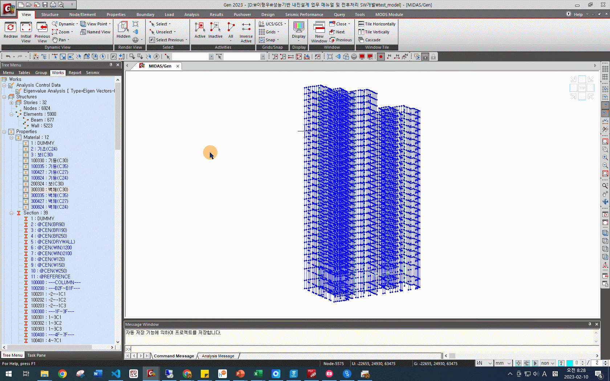
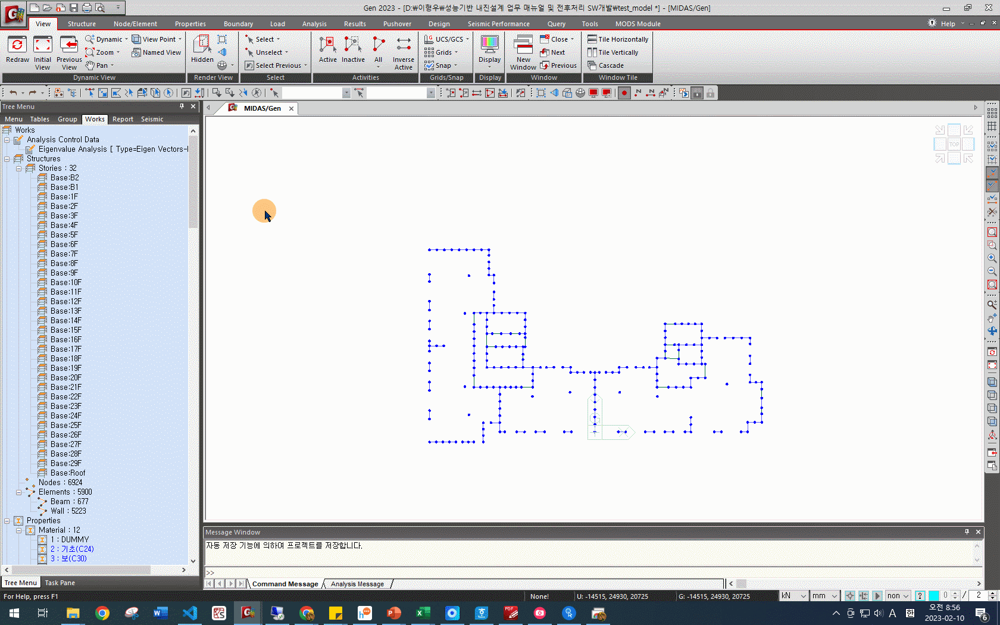

지하외벽 생성#
비선형 해석에서는 지반-건축물 상호작용을 고려하기 위하여 지하층 구조물을 반드시 고려해야 합니다. 1 탄성설계 모델에 지하층 구조물이 반영되어있는 경우, 지하층 구조물을 그대로 사용하여도 되지만, 지하층 구조물에 대한 정보가 부족하거나 지하층 구조물의 모델링이 까다로운 경우, 설계자와의 협의를 통해 간략화된 모델을 적용할 수 있습니다.
본 업무절차서에서는 지하층 구조물을 간략화하여 모델링하는 경우에 대해 기술하였습니다.
지하층 구조물을 간략화하여 모델링하는 경우#
본 업무절차서에서는 지하층의 구조물을 간략화하기 위하여 아래와 같이 모델링합니다.
주건물의 외벽으로부터 10m 주위에 지하외벽을 생성합니다. 다만, 주건물이 지하외벽과 접해있는 경우, 접한 부분은 그대로 모델링합니다.
지하외벽의 두께에 대한 정보가 없는 경우, 지하외벽의 두께는 450mm로 모델링합니다.
지하외벽의 강도에 대한 정보가 없는 경우, 지하외벽의 강도는 기초의 강도와 동일하게 모델링합니다.
아래에서는 지하외벽을 모델링하는 방법을 예시와 함께 설명합니다.
What to do
먼저, 지하외벽의 재료와 두께 정보를 생성합니다.
재료 정보를 생성하는 방법은 재료 설정 장을 참조합니다.
지하외벽(지하외벽이 없는 경우 기초)의 강도가 C24인 모델의 지하외벽을 생성하는 경우, 아래와 같이 재료 정보를 생성합니다.

지하외벽의 두께를 설정하기 위해 Properties - Thickness를 클릭합니다. 생성된 창에서 Add를 클릭합니다.
 지하외벽의 두께에 대한 정보가 없는 경우, In-plane & Out-of-plane에 \(450 \ mm\)를 입력합니다. 보통 Thickness ID와 Name에도 두께를 입력하지만, 사용자의 편의대로 입력해도 무방합니다.
설정 후 OK - Close를 클릭합니다.


지하외벽의 재료와 두께 정보의 입력이 완료되면, 지하외벽을 생성합니다.
편리한 지하외벽 모델링을 위하여 모델의 지하층만 Active합니다.
지하외벽이 위치할 꼭지점마다 Nodes를 먼저 생성 후, 벽체를 생성할 것입니다. 이를 위해 Node/Element - Translate Nodes를 클릭합니다.
 주건물의 외벽으로부터 10m 주위에 지하외벽을 생성하는 경우, 건물의 각 꼭지점을 x, y 방향으로 각각 10m가 떨어지는 곳에 복사하는 방식으로 지하외벽의 Nodes를 생성합니다.
지하외벽의 모든 꼭지점이 설정된 모습은 다음과 같습니다.

생성된 꼭지점을 연결하여 벽체를 생성합니다.
Node/Element - Create Elements를 클릭합니다.
Element Type에서 Wall을 선택한 후, 앞서 만든 지하외벽의 강도와 두께를 각각 Material과 Thickness에서 선택합니다.

생성할 벽체의 4개의 꼭지점을 차례대로 클릭하여 벽체를 생성합니다. 모든 지하외벽이 생성된 모습은 다음과 같습니다.


정확한 해석을 위해, 생성된 지하외벽을 적정한 간격으로 분할합니다.
Node/Element - Divide Elements를 클릭합니다.
Element Type에서 Wall을 선택한 후, Number of Divisions x(수직분할, 층분할)는 \(1\), Number of Divisions z(수평분할)에는 아래와 같이 적정한 값을 입력합니다.

벽체를 선택한 후 Apply를 클릭하면, 아래와 같이 선택한 벽체가 분할됩니다.

위의 방법으로 생성한 모든 지하외벽을 적정한 간격으로 분할합니다.


- 1
대한건축학회, 철근콘크리트 건축구조물의 성능기반 내진설계 지침(2021), 4.6